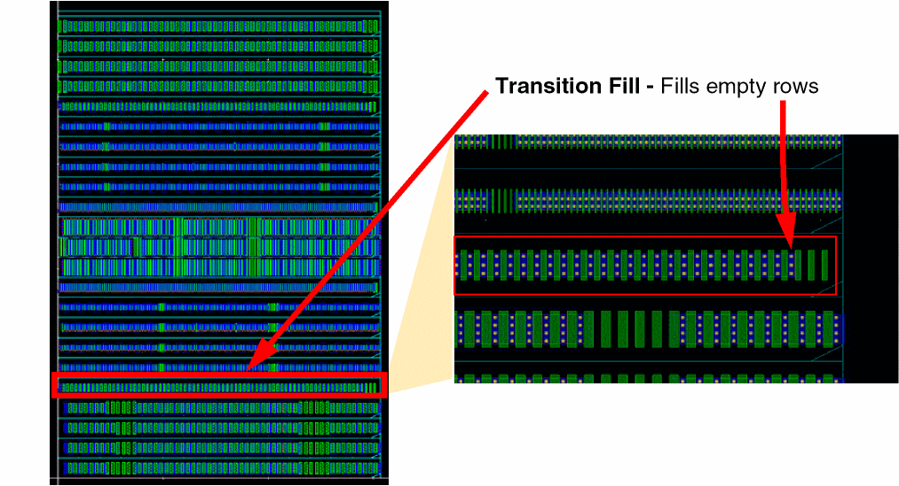

4
Placement Post-Processing
This chapter covers tasks that are performed after achieving the required placement results. To achieve design correctness and conformance to advanced node layout constraints, you can insert dummy fill in the empty spaces in rows. Depending on your design type, you can insert the following types of dummy fill:
- Filler cells: Inserted between standard cells in digital designs.
- Dummy fill: Inserted between devices in analog designs.
After completing all placement tasks, use the Batch Checker to verify whether the placement satisfies placement constraints.
Insert/Delete Dummy Fill
Insert/Delete Dummy Fill is an analog fill utility available only at advanced nodes. Dummy fill cells are inserted in the empty spaces in each row without impacting the row size.
This chapter includes the following sections:
Prerequisites
Before inserting dummy fill, ensure that:
- All active devices are placed in rows. Align the devices with matching concerns down the center of the rows for better symmetry.
- The rows do not include devices with different finger lengths.
- An empty row is maintained between devices with different lengths.
Depending on the placement that you have created, you might need to stretch the row region to create the required number of rows for the fill.
Types of Fill
Dummy fill can classified into the following three types:
-
Adjacent fill: Is a type of device fill inserted to the left side of devices, as shown in the snapshot below. These instances are created with all their parameters equal to those of the active devices. Adjacent fill are automatically snapped to the nearest compatible rows in a Spacing Patterns (SP) or Width Spacing Patterns (WSP)-correct manner.
Inserting adjacent fill helps achieve better active layer density.
-
Transition fill: Is a type of device fill inserted in empty rows to mitigate the effects that a type of device might have on other devices. The transition fill utility lets you insert devices between rows of devices. Transition fill cells are automatically snapped to the nearest compatible rows in an SP or WSP-correct manner. In certain advanced node processes, active devices are surrounded by an entire region of same-sized dummy fill to achieve proper matching. In cases where this is not practical, a transition region can be used to mitigate potential mismatch. In the snapshots below, the parameters of transition fill are the same as the neighboring devices, except that the finger length of the transition fill equals the median of the surrounding rows.
 -
Poly fill: Extends polysilicon fingers vertically to the middle of the nearest cut-poly rail. This helps achieve better poly density, as specified by the foundry and mitigates density gradient effects (DGE).
The required poly density threshold is usually much higher than the amount of poly on the instances alone. Adding poly fill satisfies this requirement.
Poly fill inherently require cut poly rails to mitigate the shorts caused due to extending the polysilicon fingers. The following two types of cut-poly rails are required:- Channel Cut-Poly rails: Separate polysilicon fingers between rows to avoid gates from being shorted.
- Transition Cut-Poly rails: Are additional cut-poly rails that surround transition devices.
In the snapshots below, notice that a channel cut-poly is created between each row of devices. Also, extra transition cut-poly rails surround the transition rows.
Inserting Fill
Use the options in the Insert/Delete Dummy Fill form to insert dummy fill in your design. To insert dummy fill, open the Insert/Delete Dummy Fill form by selecting Place—Fill—Base Layer Dummy Fill.
The Base Layer and Dummy Fill form appears.

The options in the Base Layer and Dummy Fill form are the same as on the Fill tab of the Auto Device P&R assistant. For more information, see
Before running the command, select the instances for which dummy fill must be inserted. If no instances are selected, all instances that are currently placed within the PR boundary are selected for dummy fill insertion.
Adding New Fill Definitions
New fill definitions can be added to the drop-down list by defining and registering a SKILL procedure. A fill definition can specify the master to be used for the fill devices and set parameters on those devices.
diffusionLPP parameter can be either a single layer-purpose pair or a list of layer-purpose pairs. The fill definition fingerLPP parameter is always a list of layer-purpose pairs.Here is an example of a SKILL procedure:
Use the following SKILL functions to register the SKILL procedures:
- lobRegisterAdjacentFillDefsProc: Registers the specified user function symbol as the adjacent fill definition procedure.
- lobRegisterTransitionFillDefsProc: Registers the specified user function symbol as the transition fill definition procedure.
- lobRegUserProc: Registers a user-defined function for a specific purpose, as needed by layout objects. This function is currently used to register procedures to retrieve adjacent fill definitions.
Use the following SKILL functions to retrieve names of registered procedures:
- lobGetRegisteredAdjacentFillDefsProc: Returns the name of the function that is registered as the adjacent fill definition procedure.
- lobGetRegisteredTransitionFillDefsProc: Returns the name of the function that is registered as the transition fill definition procedure.
- lobGetRegUserProc: Returns a list of strings that contain the name of the specified registered user procedure.
Use the following SKILL functions to unregister procedures:
- lobUnRegisterAdjacentFillDefsProc: Unregisters the specified user function symbol, which is currently registered as the adjacent fill definition procedure.
- lobUnRegisterTransitionFillDefsProc: Unregisters the specified user function symbol, which is currently registered as the transition fill definition procedure.
- lobUnRegUserProc: Accepts user functions based on keyword and unregisters them.
Verify Placement
After performing all the placement tasks, you can verify whether the placement is DRC-correct. Use the Batch Checker form to verify constraints and width spacing pattern (WSP)-specific settings in your design.
- Choose Verify – Design to open the Batch Checker form.
-
Choose Placement in the Check panel. The Placement options are displayed in the right panel of the form. The options on the Placement tab available in Virtuoso Layout EXL cockpit in advanced node releases is different from the options available in all other releases. The following snapshots show the differences:
These placement checks let you verify the constraints and width spacing pattern (WSP)-specific settings in your design. To run these checks: -
In the Check For group box, choose the following:
-
Constraints
Checks for conformance with the following constraints, which Virtuoso Placer honors:- Alignment
- Orientation
- Symmetry
-
DistanceYou can use Cadence Physical Verification System (PVS) Constraint Validation (CV) to run a comprehensive check of all placement and routing constraints. For more information, see Running PVS-CV in Cadence Physical Verification User Guide.
-
Row/Grid
Checks whether instances are snapped to the correct rows or grids. -
Spacing
Checks instances for conformance with spacing rules that are set, for example the layer spacing rules defined in the technology file and row spacing rules defined in the Row Template Manager. -
Minimum Pin Access
Checks WSP tracks for conformance with the Minimum Pin Access Count specified on the Misc tab of the Placement Options form. For more information, see Miscellaneous Options. -
Color Aware
Checks shapes for conformance with color locks assigned to them, if any. -
Context Aware
Verifies whether context-aware placement has been done for standard cells and whether the edge type and spacing constraints of tap cells have been honored during placement.
-
Constraints
- In the Reports section, choose one or both the following options:
- In the Scope section, choose Selected Only to run batch checker only on selected objects in the design. Clear the check box to run batch checker on the entire design.
Return to top